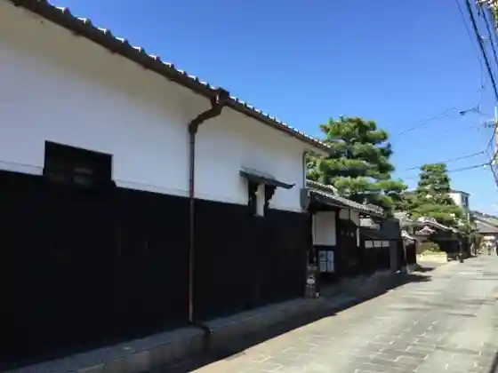
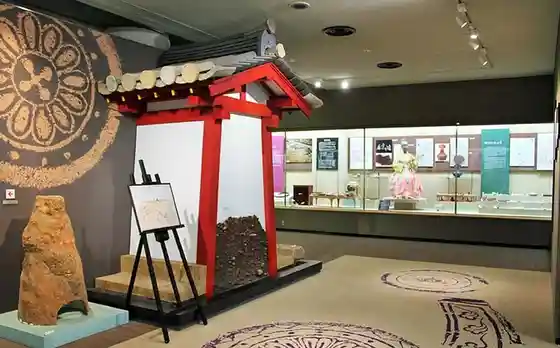
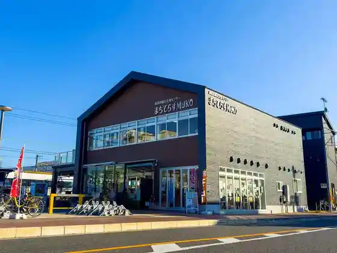
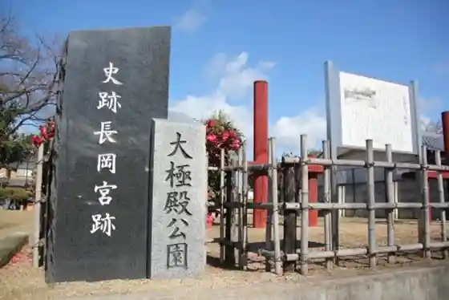

Take no Kei
Muko, Kyoto · 075-874-1347
Nishikoku Kaido
Muko, Kyoto · 075-931-1182

Burial Mound Meguri Kosu
Muko, Kyoto

Muko Kanko Koryu Center Machiterasu MUKO
Muko, Kyoto · 075-874-2031

Historic Site Nagaoka Kyuseki Taikyoku Dono Sho Ate Ato
Muko, Kyoto

Kogetsu Iori
Muko, Kyoto · 075-933-4560
Muko Shrine
Muko, Kyoto · 075-921-0217
Historic Site Kyuseki Meguri Kosu
Muko, Kyoto
Nishikoku Kaido Meguri Kosu
Muko, Kyoto
Historic Site Nagaoka Kyuseki Chodo In Ato
Muko, Kyoto · 075-931-3841
Muko Tenmonkan
Muko, Kyoto · 075-935-3800
Toyo Chikko
Muko, Kyoto · 075-933-7733
Moto Inari Burial Mound
Muko, Kyoto · 075-874-3860
Kyu Ueda Ie House
Muko, Kyoto · 075-874-1023
Honzan Sekito Tera
Muko, Kyoto · 075-931-0713
Kita Makoto Kei Tera
Muko, Kyoto · 075-933-7563
Rekishi Bunka Koryu Center
Muko, Kyoto · 075-932-5011
Nagamori Korekushongyararii
Muko, Kyoto · 075-280-1110
Muko Bunka Museum
Muko, Kyoto · 075-931-1182
Minami Makoto Kei Tera
Muko, Kyoto · 075-921-3912
Terato Otsuka Burial Mound
Muko, Kyoto · 075-874-3860
Mozume Kurumazuka Burial Mound
Muko, Kyoto · 075-874-3860
Muko Tourism Association
Muko, Kyoto · 070-1765-5398
Go Tsukahara Burial Mound
Muko, Kyoto · 075-874-3860